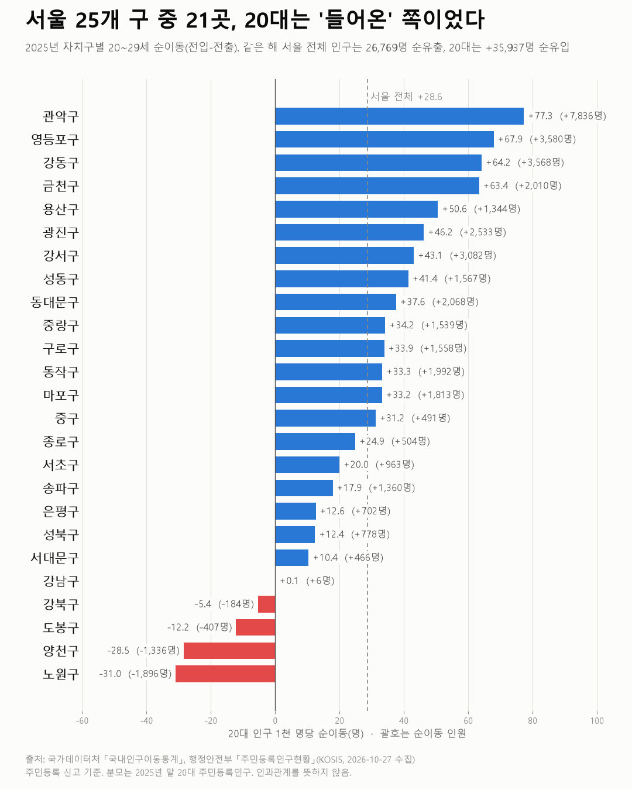
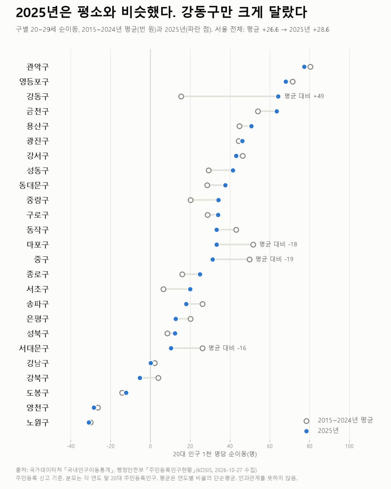

인구이동 + 주민등록인구
서울은 사람이 빠져나가는데, 20대는 들어왔다
2025년 자치구별 20대 순이동

질문
2025년 서울 25개 자치구에서 20대(20~29세)는 순유입이었나, 순유출이었나?
사용 데이터와 출처
| 데이터 | 출처 | 쓰임 |
|---|---|---|
| 서울특별시 시군구 각세별 이동자수 (KOSIS DT_1B26B02) | 국가데이터처 「국내인구이동통계」 | 전입·전출·순이동 |
| 행정구역(읍면동)별/5세별 주민등록인구 (KOSIS DT_1B04005N) | 행정안전부 「주민등록인구현황」 | 천 명당 비율의 분모 |
- 수집일: 2026-10-27 (KOSIS 오픈API)
- 계산: 순이동 = 전입 − 전출. 천 명당 = 20대 순이동 ÷ 2025년 말 20대 주민등록인구 × 1,000.
- 검증: 25개 구 합계가 서울 전체와 8개 항목 모두 일치(차이 0명). 나이별 합 = 총계, 순이동 = 전입 − 전출 확인.
인사이트
1. 서울 전체는 빠져나갔지만 20대는 들어왔다. 2025년 서울 전체 인구는 26,769명 순유출이었다. 같은 해 20대만 보면 35,937명 순유입(20대 인구 천 명당 +28.6명)이다. 서울 안 구끼리 주고받은 이동은 합치면 0이므로, 이 순유입은 모두 서울 밖에서 들어온 것이다.
2. 25개 구 중 21곳이 20대 순유입. 다만 강남구는 +6명으로 사실상 균형이다. 20대가 줄어든 곳은 노원(−1,896명), 양천(−1,336명), 도봉(−407명), 강북(−184명) 4곳이다.
3. 관악구가 인원과 비율 모두 1위. 관악구는 +7,836명, 천 명당 +77.3명으로 압도적이다. 흥미로운 점은 출처다. 서울 밖에서는 +8,211명이 들어왔지만, 서울 안 다른 구와의 이동에서는 오히려 −375명이다. 서울 밖에서 온 20대가 처음 자리 잡는 곳이 관악이고, 이후 다른 구로 옮겨 가는 흐름일 수 있다. (이 해석은 가설이며, 이 데이터만으로 확인되지 않는다.)
4. 강동구는 결이 다르다. 20대 순유입(+3,568명) 가운데 서울 안 다른 구에서 온 몫(+2,401명)이 서울 밖에서 온 몫(+1,167명)보다 크다. 전체 연령 순유입도 +21,692명으로 25개 구 중 가장 크다. 20대만의 움직임이라기보다 구 전체로 사람이 몰린 해로 보인다.
5. 순이동은 작아도 실제 이동은 크다. 관악구 20대는 1년 동안 38,685명이 들어오고 30,849명이 나갔다. 순이동 숫자만 보면 이 회전 규모가 가려진다.
2025년은 특별한 해였나? (2015~2024년과 비교)

6. 서울 20대 순유입은 11년 내내 이어졌다. 2015~2025년 매년 서울 전체 인구는 순유출이었지만, 20대는 매년 순유입이었다. 2025년(천 명당 +28.6)은 직전 10년 평균(+26.6)과 비슷하다. 정점은 2022년(+53,689명, +38.6)이었다.
7. 인원은 줄었는데 비율은 그대로인 이유. 2025년 20대 순유입 인원(35,937명)은 10년 평균(37,601명)보다 조금 적다. 그런데 비율은 오히려 조금 높다. 서울의 20대 인구 자체가 2015년 145만 명에서 2025년 125만 명으로 13% 줄어 분모가 작아졌기 때문이다. 인원과 비율이 다른 이야기를 할 수 있으니 둘 다 봐야 한다.
8. 구별 판도는 거의 고정이다. 관악구는 11년 모두 순위 1~3위다. 노원·양천·도봉은 11년 모두 20대 순유출이다. 2025년의 "21곳 순유입"도 예년(18~22곳) 범위 안이다.
9. 크게 달라진 곳은 강동구다. 강동구는 2015~2018년 20대 순유출(2015년 25위, 꼴찌)이었다. 2019년부터 순유입으로 바뀌었고, 2025년에는 3위(+64.2)까지 올라왔다. 10년 평균(+15.4)보다 49포인트 높다. 반대로 마포구(2015년 2위 → 2025년 13위)와 중구, 서대문구는 2025년에 평균보다 15포인트 넘게 낮았다. 이 변화가 무엇 때문인지는 이 데이터로 알 수 없다.
한계
이 데이터로 말할 수 없는 것
- 주민등록 신고 기준이다. 전입신고를 하지 않았거나 늦게 한 경우, 주소만 옮긴 경우가 있어 실제 거주 이동과 다를 수 있다. 대학생처럼 주소를 옮기지 않고 사는 경우가 20대에 특히 많을 수 있다.
- 분모가 연말 인구다. 연중 평균 인구(연앙인구)가 아니라 연말 인구를 썼다. 순유입이 많은 구는 분모가 커져 비율이 조금 낮게 나온다.
- 비교 기준. 2015~2024년 평균은 연도별 비율을 단순 평균한 값이다. 2015년 이전은 보지 않았다.
- 내국인만 포함한다. 외국인 이동은 포함되지 않는다.
- 나이 기준. 이동 당시 나이 기준이며, 20~29세를 1세 단위로 합산했다.
- 원인은 말하지 않는다. 대학, 일자리, 주거비, 신축 아파트 등과의 관계는 이 데이터로 확인할 수 없다. 이 글은 패턴만 보여준다.
전제 기록 (분석 전 선언 → 변경 사항)
데이터를 보기 전에 적어둔 것, 그리고 보고 나서 바꾼 것
- 전제 v4 그대로 진행.
- 2번 "천 명당 비율을 구할 수 있으면 병기" → 구할 수 있었고, 분모는 연말 인구로 정함(연앙인구를 따로 구할 수 없음). 결과를 보기 전에 정했음.
- 20대 = 20~29세(1세 단위 합산). 결과를 보기 전에 정했음.